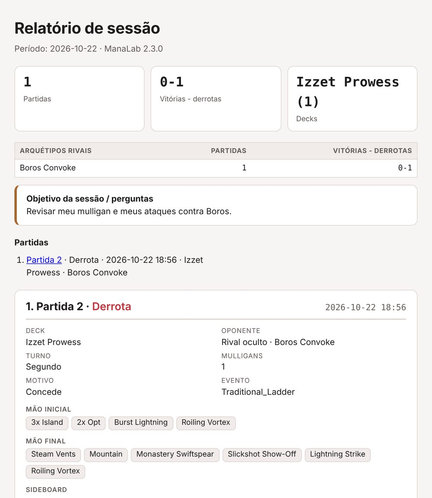
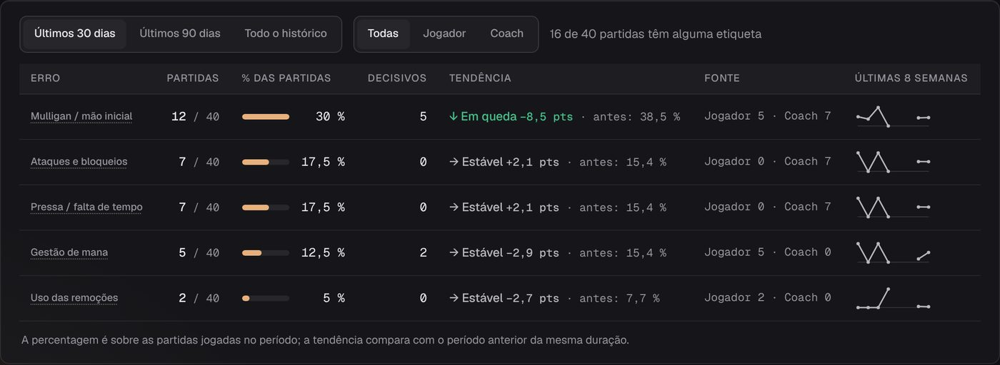

Como revisar um aluno com o ManaLab
Seu aluno joga como sempre e chega com as partidas já salvas. Assim você dedica a aula às decisões dele, sem pedir capturas nem tentar reconstruir o que aconteceu.
Versão 2.3.0 · ZIP · outras versões
Seu aluno precisa do ManaLab para criar o relatório. Você não precisa dele para lê-lo.
Antes de descompactar, clique com o botão direito no ZIP › Propriedades › marque Desbloquear › OK. Se ainda aparecer um aviso, clique em Mais informações › Executar assim mesmo.

Relatório de sessão com dados de exemplo.
Mais aula dedicada às decisões, menos preparação
O ManaLab é um tracker gratuito para MTG Arena e Magic Online. Ele salva sozinho as mãos iniciais, os mulligans, quem começou, o deck do adversário e um replay de cada partida.
Menos preparação
O aluno escolhe as partidas e envia um único relatório.
Decisões visíveis
Você vê a mão, o mulligan e os momentos-chave de cada partida.
Erros que se repetem
As etiquetas mostram o que falha sempre e como isso evolui em 30 ou 90 dias.
Sideboard com dados
O aluno guarda o plano por matchup e você vê o que ele realmente mudou.
O programa é gratuito e não precisa de conta. Seu aluno precisa dele para criar qualquer um destes arquivos; você só precisa instalá-lo se quiser usar o modo Equipe ou abrir partidas exportadas.
Escolha como trabalhar
Relatório de sessão
- O que você recebe
- Um arquivo com as partidas escolhidas
- Precisa do ManaLab?
- Não, abre no navegador
- Melhor para
- Aulas avulsas
Exportar para o coach
- O que você recebe
- Resumo, matchups, erros e partidas com notas
- Precisa do ManaLab?
- Não, abre no navegador
- Melhor para
- Primeira aula ou revisão geral
Arquivo .manalab
- O que você recebe
- Um match completo, com todas as partidas e o replay
- Precisa do ManaLab?
- Sim
- Melhor para
- Estudar um match a fundo
Modo Equipe
- O que você recebe
- Partidas, capturas e notas em uma pasta compartilhada
- Precisa do ManaLab?
- Sim
- Melhor para
- Alunos frequentes
Envie estes passos ao seu aluno
Leva poucos minutos se ele já tiver partidas salvas.
- Instalar o ManaLab em manalab.es e deixá-lo aberto enquanto joga.
- Jogar normalmente. Para marcar uma decisão difícil, pressione F8 (a tecla padrão): uma captura desse momento é salva.
- Marcar os erros. Na aba Notas de cada partida, adicione etiquetas e escreva as dúvidas.
- Escolher o que revisar. Em Partidas, abra «⋯» › «Preparar sessão» e marque as partidas.
- Criar e enviar o relatório. Clique em «Criar relatório de sessão», salve em PDF se quiser e envie ao coach.
O relatório inclui mãos, mulligans, momentos-chave, resumo por turno, notas e momentos de destaque. Funciona sem internet, e o aluno pode ocultar o nome dos adversários.
Na primeira aula, peça também «Exportar para o coach», no menu «⋯» de Estatísticas. Você recebe o resumo, os matchups e os erros marcados.
Antes da aula, instale o ManaLab (manalab.es). É gratuito e não precisa de conta. Jogue com ele aberto e pressione F8 em qualquer jogada que te deixar em dúvida. Depois, em Partidas, abra ⋯ › Preparar sessão, escolha 3 partidas e me envie o relatório.
Comece pelo que se repete
Depois passe para partidas concretas. Esta ordem funciona bem em uma aula de uma hora:
- Tendências. Abra «O que mais se repete» em Estatísticas e escolha um único tema de trabalho.
- Matchups. A tabela separa a partida 1 das partidas depois do sideboard. Um asterisco indica menos de 10 partidas, então não tire conclusões firmes dessas linhas.
- Mãos e mulligans. Revise isso antes das jogadas: era uma mão para manter?
- Replay. Vá aos momentos-chave e comente as decisões ligadas ao tema escolhido.
- Sideboard. Compare o plano do aluno com o que ele realmente colocou e tirou.

«O que mais se repete» em Estatísticas, com dados de exemplo.
Com o modo Equipe você vê cada partida com o mesmo detalhe que o aluno: mãos, capturas com notas (se ele as compartilhar), replay e deck do adversário.
Deixe um ou dois objetivos, não uma lista longa
Assim a próxima aula pode começar verificando se ele melhorou.
- Etiquetas: use sempre os mesmos nomes para que «O que mais se repete» meça bem a evolução.
- Notas: no modo Equipe, escreva sua nota na aba Notas da partida.
- Acompanhamento: na próxima aula, veja esse erro em 30 dias antes de abrir partidas novas.
Como ativar o modo Equipe
- Criem uma pasta compartilhada no Google Drive, Dropbox ou OneDrive.
- Cada um abre Configurações › Equipe e IA e define a pasta, o nome e a função: jogador ou coach.
- Cliquem em «Sincronizar agora».
Cada pessoa escreve só na própria subpasta. Por padrão, o ManaLab publica todas as partidas do seu aluno na pasta compartilhada; ele pode ocultar o nome dos adversários, desativar o compartilhamento de capturas ou parar de compartilhar.
Como sua nota chega ao aluno
Abra a tela Equipa, escolha seu aluno e uma partida, e escreva na caixa «A tua nota de coach para esta partida…» da aba Notas. A nota é salva na pasta compartilhada quando você sai da caixa; para isso não precisa de «Sincronizar agora». Seu aluno a vê na aba Notas dessa partida quando o serviço de pastas dele (Google Drive, Dropbox ou OneDrive) tiver sincronizado o arquivo e ele abrir a aba.
O que ter em mente no Magic Online
Revisar um aluno funciona com os dois jogos. No Magic Online, vale ter quatro coisas em mente:
- Sideboard: o aluno precisa confirmar as mudanças entre as partidas com um clique («Usar esta mudança», «Sem mudanças» ou «Editar»). Partidas nunca confirmadas não contam nas mudanças de sideboard mostradas em Sideboard.
- Replay: as fases e as cartas viradas que não estão confirmadas levam a marca ≈, porque podem não ser exatas.
- Nomes de deck: um deck do Magic Online costuma ser nomeado pelas cores, então pergunte ao aluno qual é.
- Importações: importar um log não corrige o sideboard das partidas já salvas.
No Arena, ative Opções › Conta › “Detailed Logs (Plugin Support)” uma vez e reinicie o jogo. O Magic Online não precisa de nenhuma configuração.
Antes de começar
Custa alguma coisa?
O programa é gratuito. A única parte paga é a análise de derrotas com IA, que você não precisa para nada neste guia.
Meu aluno compartilha todo o histórico?
No relatório e no arquivo .manalab ele compartilha só o que escolher. No modo Equipe, o ManaLab publica todas as partidas dele na pasta compartilhada, a menos que ele pare de compartilhar; ele pode ocultar o nome dos adversários e desativar o compartilhamento de capturas.
As partidas dele contam nas minhas estatísticas?
Não. As partidas de outro jogador ficam marcadas e não contam nas suas.
O que uma partida importada não traz?
Capturas e análise com IA. Ela mantém replay, mãos, mulligans, deck, notas e etiquetas.
Do que eu preciso?
O ManaLab funciona no Windows 10 e 11. Os relatórios abrem em qualquer navegador, então você não precisa instalar nada para lê-los.
E se faltar alguma coisa?
Escreva para manalab.app@gmail.com. As ferramentas para coaches estão sendo construídas com o que vocês pedem.
O programa é gratuito. Só a análise com IA é paga
A análise com IA das suas derrotas custa 5 € por mês e paga o serviço de IA que ela usa. Todo o resto, incluindo tudo nesta página, é gratuito. Quer testar antes? Peça um teste grátis por e-mail.